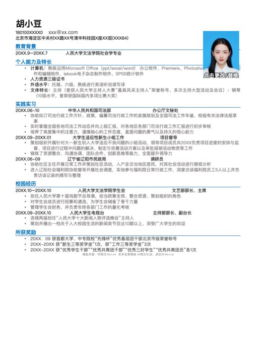
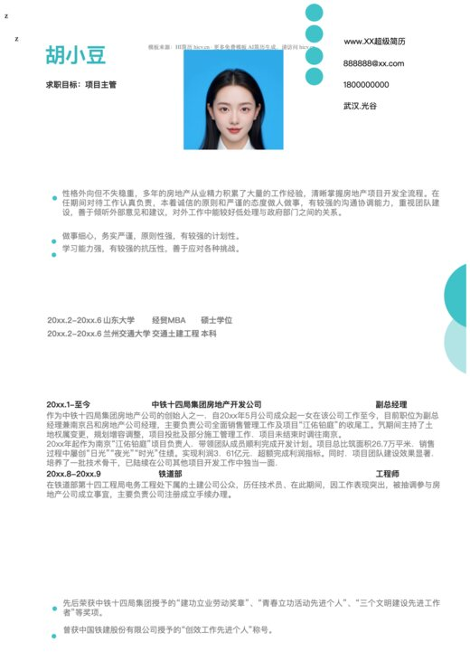
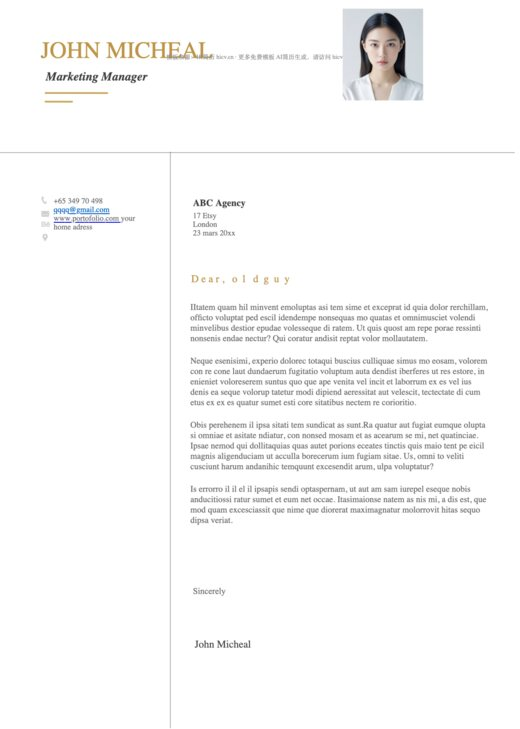
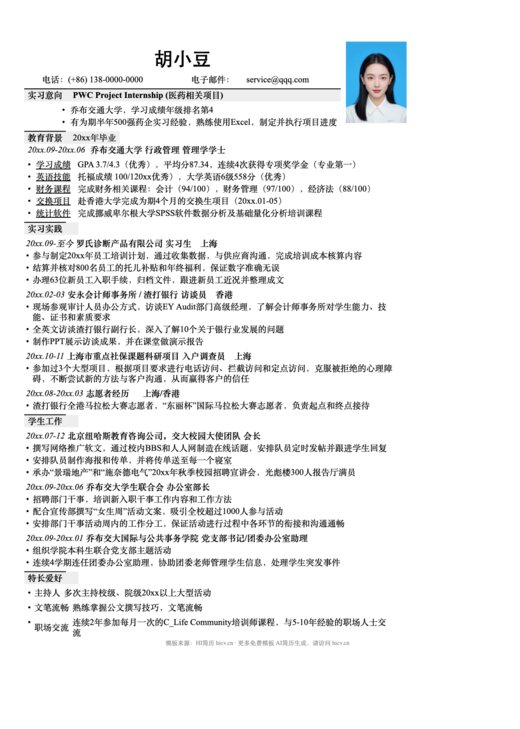
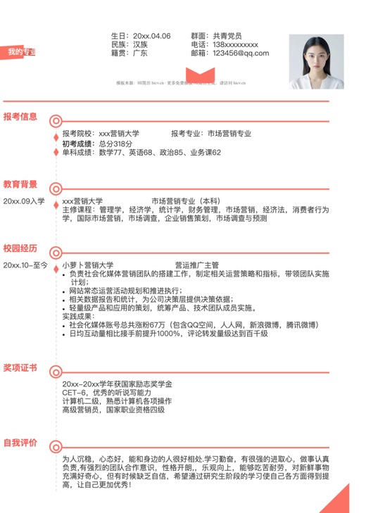

简约单页
适合校招、实习和工作经历较精炼的求职者，一页内突出教育、经历、项目与技能。
全部由仓库中的真实 DOCX 直接渲染，保持原始版式比例，不使用示意图。






从访问量最高的单页、表格和岗位模板开始，减少在 2,132 个文件中反复查找。
适合校招、实习和工作经历较精炼的求职者，一页内突出教育、经历、项目与技能。
结构清晰、信息密度高，适合希望使用传统中文表格式版面的求职者。
按银行、教师、咨询、四大、法务、外贸等具体岗位场景选择模板。
覆盖互联网、财务、人力资源、医学、销售和教育等行业方向。
用于外企求职、海外实习和留学申请的可编辑英文 Resume 与 CV 模板。
包含复试单页简历、多页科研简历和调剂申请表，适合考研复试准备。